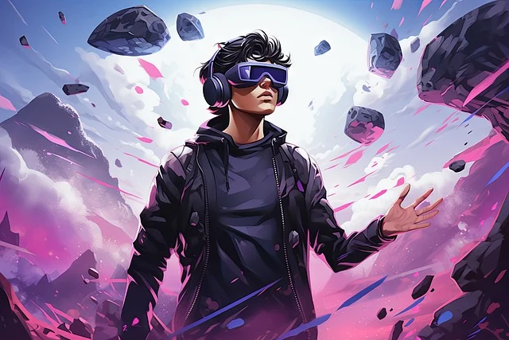
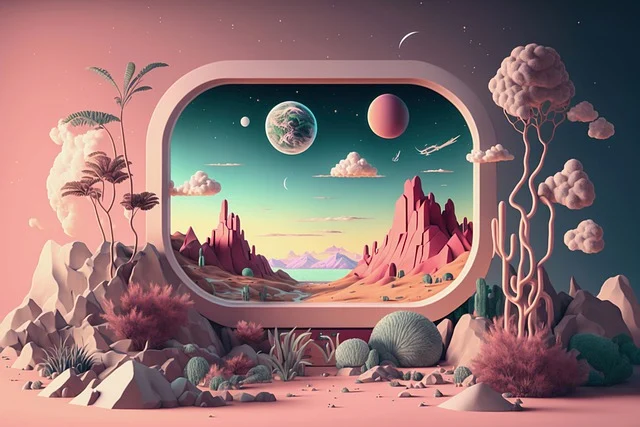

首页




虚拟现实的狂热追随者
作为一位专注于Oculus Quest Pro、HTC Vive Pro等先进VR设备开发的开发者，我深深地热爱这些技术所带来的创新和无限可能。这些设备不仅仅是技术进步的象征，更是我探索和创造力的源泉。
高级VR技术的迅速发展不仅扩展了娱乐和游戏的边界，还在教育、医疗等领域展示了巨大的潜力。我相信这种技术不仅能够娱乐和启发人们，还能够改善人类生活质量，为社会带来积极的变革。
因此，我对元宇宙的热爱源于它们技术的前沿性和创新性，以及它们为我提供的一个无限创作和实现梦想的平台。在这个充满可能的虚拟世界里，我能够不断探索、学习和成长，为空间计算时代做出贡献。